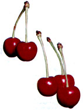
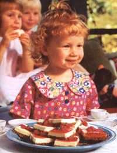
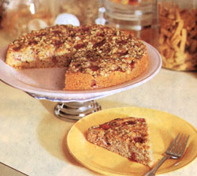
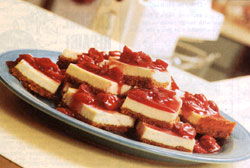

Mother's Kitchen
Michigan is fighting the title of Cherry Capital of the World, and Anne Vassal defends the home turf with the best fruit recipes you've ever tasted. We can't wait for our annual journey to southwestern Michigan for a day of cherry pickin'. Those ripe, juicy cherries almost fall into our hands, with many of them ending up in our mouths. None of those supermarket Pacific Bing cherries for me, nor would I dream of buying hard, tasteless South American or New Zealand cherries in the dead of winter. I can wait for the real thing. OK, so I'm a slightly biased ex-Michiganer, but cherries don't get any better than Traverse City in mid-July. (Door County, Wisconsin, is close behind.) Last summer my teenage son ate two pounds of sweet cherries while traveling home alone on a plane from Traverse City. His excuse for not saving me even one was, "They were too good." Anyway, after we pick more cherries than we can possibly consume, we treat ourselves to a huge piece of cherry pie from the local bakery. (Sure, I know there's lard in the crust but I don't care.)
Even though Traverse City, Michigan, and Vignola, Italy, both claim to be the cherry capital of the world (Traverse City grows more cherries but Vignola's been growing them longer), it's the Pacific Northwest that accounts for 70 percent of the sweet cherry production, while Michigan produces three-quarters of our sour (or tart) cherries. Why have a sour cherry? Mostly, they're needed for commercial processing into frozen and canned products such as pie filling. Some folks swear by fresh sour cherries for their homemade pies. And we can thank those same cherry plants for producing the maraschino cherries swirling in the bottom of our Shirley Temple cocktails.
Nutritionally, cherries are very much like most fruit in that they contain antioxidants such as vitamin C and betacarotene. Plus, they are loaded with fiber, and studies have shown that fruit fiber can help fight high blood pressure, heart disease, and certain types of cancers. Take advantage of this season's cherries by using them in muffins, pancakes, fruit shakes, salsas, salads, jams, and of course, pies. And there's no need to limit cherries just to desserts. Ray Pleva, a butcher in Cedar, Michigan, found this out when he began to experiment with using tart cherries in his ground beef and sausage. It was only after his daughter was crowned National Cherry Queen that Ray became aware of some of the problems facing Michigan's troubled cherry industry. He not only developed a healthier, better-tasting burger but he found that the cherries' antioxidants kept the meat fresher longer. Ray continues to make a dent in Michigan's cherry surplus by distributing his cherry meat all over the country.
This brings to mind the question of why everyone east of the Mississippi is buying Northwest cherries at the supermarket instead of locally grown fruit. According to James Flore, professor of horticulture at Michigan State University, rain is the industry's biggest problem. "Ripe berries will split open if they get wet at the wrong time, making the crop unpredictable." Supermarket chains can't gamble on the weather when they've placed orders and arranged for advertisements months in advance, says a Chicago produce manager. Sure, Northwest growers have the same problem but their huge industry can afford overhead orchard fans or helicopters to blow the water off the cherry orchards. Once again, big business reigns. But who needs jet-lagged fruit? Take a drive and find a local produce stand.
Choosing Cherries
The most popular Northwest sweet cherry is the venerable Bing. These large cherries will be a dark burgundy color when fully ripened. The smaller, heart-shaped Lambert cherry is similar in taste to the Bing. A strange-looking yellowish cherry is an extra-sweet hybrid called the Rainier. In the Midwest, the Schmidt is a variety similar to the Bing. Other sweet cherry varieties of that region are the Emperor Francis and the Rainier. Tart cherries can sometimes be found at local farm stands for use in pies and preserves. When picking out fresh cherries, make sure they're firm (but not hard) and without soft spots or bruises. The stems should be green and not darkened with age. Wash the cherries and pat dry and then store them in a plastic container for up to two weeks. Cherries deteriorate rapidly if they're not kept refrigerated.
Cherry Coffee Cake
This easy coffee cake can be made even faster in a food processor, and it's great for more than just breakfast.
Topping:
1 tablespoon hard or partially frozen butter, chopped into cubes
1 teaspoon flour
1 tablespoon brown sugar
1/2 teaspoon cinnamon
2 tablespoons thin oats
Cake:
1/4 cup canola oil (or any mild oil)
1/4 cup honey
1 tablespoon sugar
1/2 teaspoon cinnamon
1 large egg
1/2 teaspoon vanilla
1/2 cup low fat buttermilk
1 1/2 cups sifted whole wheat pastry flour or unbleached white flour
1 1/2 teaspoons baking powder
1/2 teaspoon baking soda
1 cup fresh or frozen cherries, halved (sweet or tart cherries)
Preheat the oven to 350°F In a food processor or using a strong fork, mix the topping ingredients (except the oats) until small crumbs form. Briefly mix in the oats. Pour into a bowl and set aside. Lightly grease an 8- or 9-inch round cake pan. In the processor or using a mixer, mix well the ingredients up to the buttermilk. Stir together the flour, baking powder, and soda. Briefly mix into the wet mixture. Pour half the batter into the pan. Spoon the cherries evenly over the batter. Spoon the rest of the batter over the cherries. (Some will show through.)
Sprinkle on the topping. Bake for 30-35 minutes until lightly browned and an inserted toothpick comes out clean. Cool for ten minutes before slicing into wedges.
Grilled Chicken Salad with Cherry Vinaigrette
Next time you have the grill fired up, grill a few extra chicken breasts for a summer salad the following day.
2 boneless chicken breasts, cut in half to make four pieces (about 1/4 pound each)
olive oil, salt, freshly ground pepper
optional: fresh herbs such as thyme and rosemary
about 8 cups assorted garden lettuce or greens such as baby romaine, leaf, red oak, endive, arugula, spinach (about 1/2 pound)
1 medium red onion, halved and sliced thin
10-15 radishes, sliced thin
Vinaigrette:
1 cup fresh cherries, pitted
2 1/2 tablespoons balsamic vinegar
2 tablespoons canola oil (or any mild oil)
1 tablespoon sugar
1/2 cup cherry juice
2 teaspoons grated ginger root (peeled first), dash salt, cayenne pepper and/or freshly ground pepper
I n a blender, combine the ingredients for the vinaigrette. Chill in a jar until ready to use. (The dressing can be strained for a smoother appearance.) Brush the chicken with oil and sprinkle with salt, ground pepper, and any fresh herbs you may have. Grill and chill until needed. Wash and dry the salad greens. Toss with the onions and radishes. Slice the chicken diagonally into thin strips. Just before serving, toss the lettuce and vinaigrette. Lay the salad on the plates and top with the sliced chicken. Garnish with chopped fresh herbs.
Maple Cherry Sauce
Here's a sauce that can be used hot or cold as a topping for grilled meats, yogurt, ice cream, or cheesecake. We used it instead of frosting for chocolate birthday cupcakes. Tart cherries may be used but you'll need to adjust the sweetening.
1/4 cup cherry juice or juice blend
1 1/2 teaspoons arrowroot flour*
2 tablespoons real maple syrup
2 cups pitted fresh or frozen sweet cherries, halved
In a glass measuring cup, whisk together the juice and flour. In a large skillet, pour in the juice and the maple syrup. Stir over medium heat until the sauce starts to thicken. Add the cherries and simmer until they soften, smashing them a bit. Don't overcook. If the sauce isn't thick enough, whisk a little arrowroot flour (about one teaspoon) together with a tablespoon of juice and then add to the sauce. Cool or serve hot. It thickens a little as it cools. Option: 1 teaspoon grated orange rind or 1 tablespoon brandy. The recipe will make one cup of sauce.
*Arrowroot flour is a healthier and better-tasting alternative to cornstarch. It can be found at health food stores.
Cherry Cheesecake Bars
These low-fat bars are an easy dessert to take to a family barbecue. Just remember to start the yogurt cheese the day before. This recipe makes a big batch.
3 cups low fat vanilla yogurt (for yogurt cheese). Brands that contain modified food starch and/or gelatin won't form correctly, so I use either Dannon low fat or Stonyfield Farm.
2 cups Maple Cherry Sauce (see page 69)
Crust:
2 cups crushed graham crackers (Frookie makes a healthier cracker.)
5 tablespoons mild oil (canola)
2 tablespoons brown sugar
Filling:
1 1/2 cups yogurt cheese
2 eight-ounce packages "lite" cream cheese (Neufchatel)
1/2 cup real maple syrup
2 teaspoons vanilla
2 large eggs
The day before: Line a colander with cheesecloth or a nonterrycloth dishtowel. Pour in the yogurt and let drain in the sink or a pan for at least 12 hours but not more than 18 or so. If it's 80°F or above, it might be a good idea to stick the colander in the refrigerator. It will take a little longer this way. When the yogurt is almost the consistency of cream cheese, remove from the dishtowel and store in a plastic container in the refrigerator until ready to use. It will keep about three days. Preheat oven to 350°F. Have a 9-by-13-inch pan ready. Place the crackers in a large Zip-Lock bag and crush with a rolling pin. In the processor or by hand, mix the oil and sugar into the crackers. Pat into the cake pan. In the processor or using a mixer, beat the yogurt cheese and cream cheese together. Beat in the maple syrup and vanilla, then the eggs. Bake for 40 minutes until the top is lightly browned and the center has puffed up. (It will fall when cooled.) Cool to room temperature, then refrigerate for at least three hours. Just before serving, spread with the cherry sauce and cut into bars.
TOO MANY CHERRIES
IF YOU'VE MANAGED to acquire such a bumper crop that you need to store your fruit for more than a couple of weeks, freezing and drying are the best bets. The only equipment you'll need beforehand is a cherry pitter and surgical gloves (unless you want red hands for days). To freeze, lay the washed cherries, pitted or not, on a jelly roll pan in a single layer and place in the freezer. When they're solid, place in labeled Zip-Lock freezer bags and they should keep well for up to a year. Never defrost cherries, however, before using in your cooking or baking because they become a mushy mess.
IF YOU'RE A BIG FAN OF RAISINS, you haven't lived until you've tried dried cherries. This is a great way to use up overripe or smashed fruit, and they are an incredible addition to muffins, granola, cookies, and grain dishes. Arrange cherries (if sliced, place skin side down) on foil-covered cookie sheets or jelly roll pans. Place in a 200°F oven for four to five hours until the cherries are shriveled. They should be leathery and slightly sticky, not hard. Cool, then store in Zip-Lock bags or plastic containers. I recommend storing homemade dried fruit in the refrigerator or freezer because moisture still present in the fruit may cause some bacterial growth. Dried fruit will also taste fresher longer if kept in a cool place.
|
 Cherry Cheesecake Bars |
 |
 |
|
 |
|
|